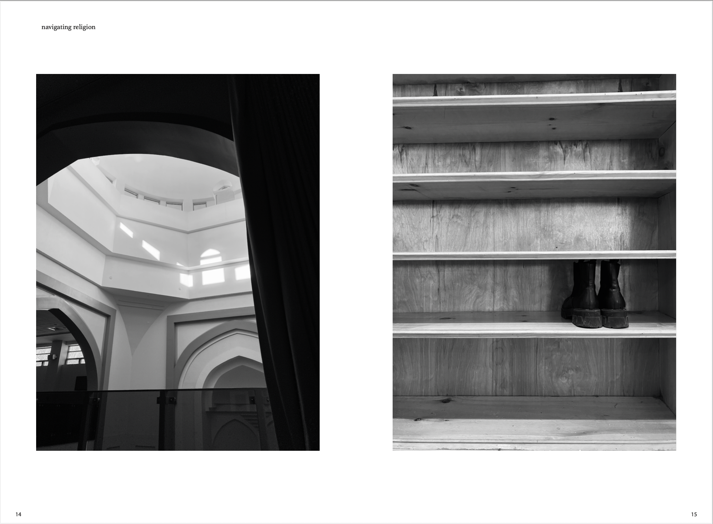
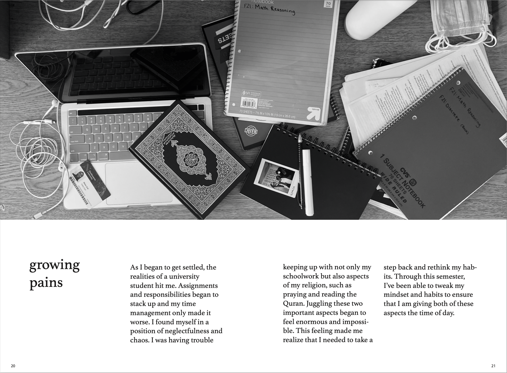
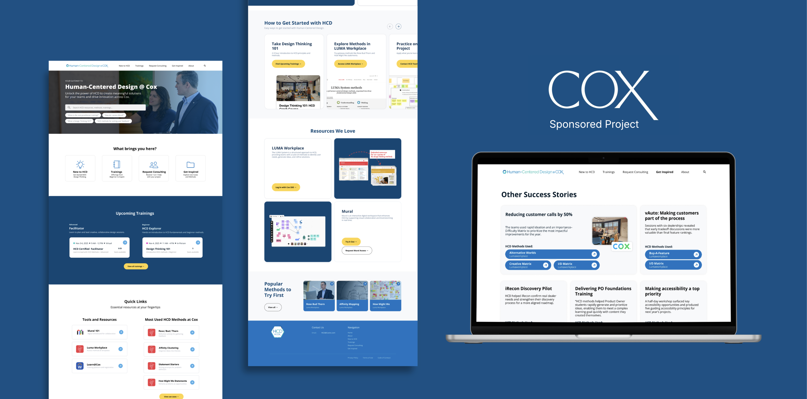
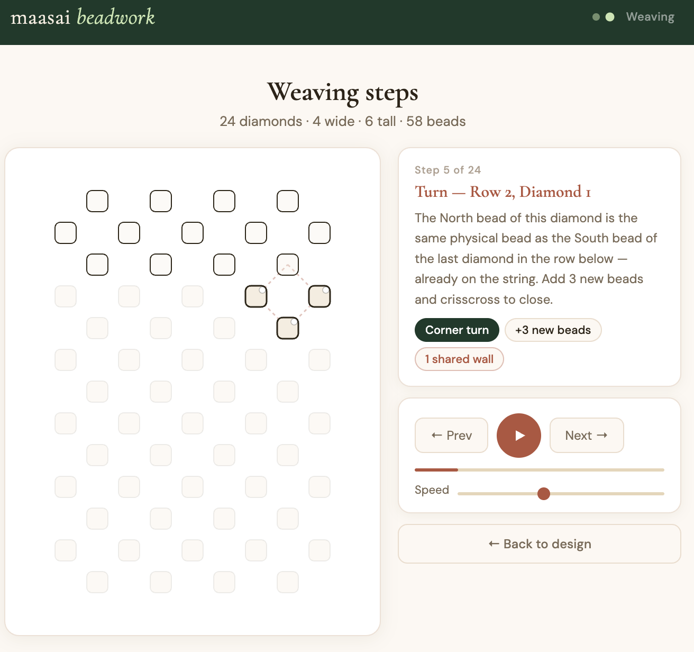

Self Reflection Photo Journal
I created a personal photo journal to document my journey of self-exploration during my first year of college and I used this as an outlet to remind myself of what's most meaningful to me. Amist the chaos and confusion of college life, this journal gave me an opportunity hit pause on life and truly reflect on my surroundings and how far I've come. All illustrations were created using Adobe Illustrator, the page layout was organized using Adobe InDesign, and all photos were taken by me.
Access Full Journal =======
Streamlining HCD Resources at Cox
UX Research & Design • 15 Weeks
Transformed fragmented HCD resources into a unified hub, empowering 55,000+ employees with self-service access and freeing the HCD team from repetitive support requests.
.jpg)
The Living Archive
UX Research & Design • 6 Months
A hybrid physical-digital experience designed to help first-generation immigrant children bridge generational gaps and preserve their cultural heritage through structured storytelling.
Feel the Heat
Experiential Data Visualization • 4 Months
An interactive installation on Georgia Tech's Media Bridge display, translating Atlanta's heat inequity data into a body-tracked experience. Each neighborhood fan is scaled to real risk rankings and paired with a fictional resident's account.

Preserving Maasai Beadwork
Craft Research & Interaction Design • 4 Months
An interactive tool that teaches Maasai Right Angle Weave beading through a diamond-grid bracelet designer and a step-by-step animation of the real stitch order. Built to make a hands-on craft tradition learnable digitally.

Radiance
UX Research & Design • 6 Months
A skincare companion that helps you navigate the world of skincare with expert insights and interactive tools. The app offers unbiased product discussions, tailored skincare quizzes, and easy access to your favorite products at Sephora.

Spoiler Alert
UX Research & Design • 6 Months
An app designed to help college students and young adults reduce food waste by tracking expiration dates and suggesting diverse, time-saving recipes.
 (1).jpg)
Imposter Syndrome Toolkit
The Imposter Syndrome Toolkit is a thoughtfully designed app aimed at helping college students navigate feelings of inadequacy and self-doubt. Rooted in extensive research and user feedback, the app provides a comforting and user-friendly experience to guide individuals through overcoming imposter syndrome.
Process Portfolio
Spoiler Alert
Spoiler Alert is an app designed to help college students and young adults reduce food waste by racking expiration dates and suggesting diverse, time-saving recipes. Informed by Wizard of Oz testing, focus groups, and interviews, the app encourages mindful consumption and empowers users to make the most of their groceries while balancing a busy lifestyle.
Experience Prototype


Extra-Continental Biographies
This project is a collection of stories about refugees and migrants striving for a better life. Through four personal narratives from Aden Yemen, New Delhi India, Yaoundé Cameroon, and Tehran Iran, the book highlights the challenges, resilience, and sacrifices of those forced to leave their homes. Focusing on typographic elements and using structure to aid storytelling, Extra-Continental Biographies provides insight into the realities of migration and the pursuit of new beginnings.
Access Full Book.png)
Radiance
Radiance is a thoughtfully designed skincare companion that helps you navigate the world of skincare with expert insights and interactive tools. The app offers unbiased product discussions, tailored skincare quizzes, and easy access to your favorite products at Sephora. Informed by street interviews, surveys, in-depth interviews, and benchmarking, Radiance ensures a personalized and well-researched skincare experience.
Experience Prototype
Mining an Archive: Time Magazine
This project analyzes the demographics of Time's Person of the Year, highlighting its lack of diversity. Using information design, it contrasts the Man of the Year era with the fact that only 12% of honorees have been women. This juxtaposition not only emphasizes historical biases but also reflects broader societal values and attitudes over time.
Access Video